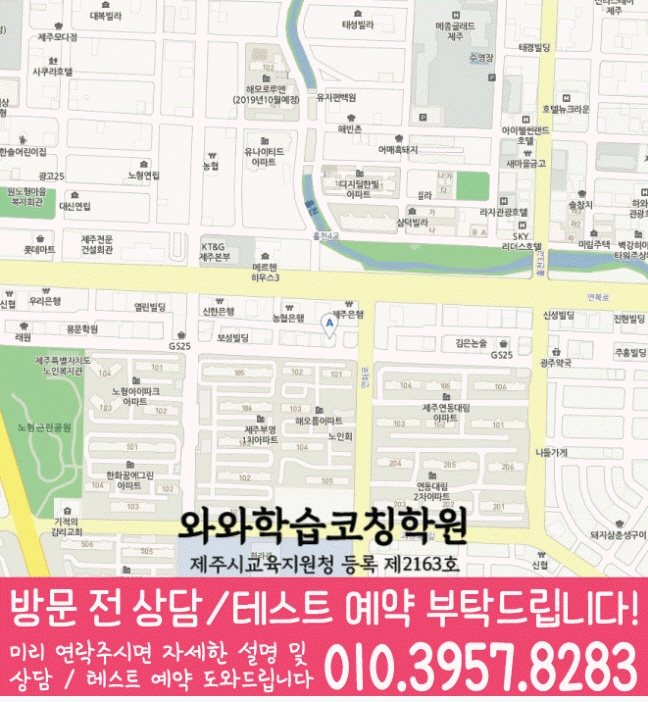

Middle school Korean · English · Math
노형동 중학생 국영수학원
노형동 중학생 국영수학원 선택 전 중등 내신 자료, 최근 오답과 과목별 가능 학년, 센터 위치·비용 확인 기준을 안내합니다.
01 Quick answer
노형동에서 먼저 확인할 내용
노형동에서 중학생 국영수학원을 찾는다면 와와학습코칭센터 노형점의 과목별 가능 학년을 먼저 확인하세요. 제공된 중학교 참고 자료와 학생의 실제 교재를 대조하고, 학생의 실제 풀이 기록에 맞게 국어·영어·수학의 막힌 원인을 나눈 뒤 실행 가능한 주간 계획을 정해야 합니다.
대표 학생 상황
보완할 부분이 있는 학생


010-6839-8283상담 전 핵심 안내
노형동에서 중학생학원을 찾는 학생들을 위해, 지역 센터는 영어와 수학의 학습 변화를 목표로 학습 진단부터 개념 정리, 유형별 문제풀이, 오답 관리까지 단계별로 연결합니다. 현재 실력과 학교 내신 흐름을 바탕으로 학생별 학습 전략을 세우고, 수업과 코칭을 통해 꾸준히 학습 변화가 기록에 남는지 확인합니다. 제주특별자치도 제주시 노형동 학부모가 노형동 중학생 국영수학원을 비교할 때는 막연한 설명보다 자녀가 지금 막히는 지점, 학교 진도, 주간 학습 기록을 함께 보는지가 중요합니다. 학년이 올라갈수록 국어·영어·수학의 부족한 단원이 서로 영향을 주기 때문에 노형동 중학생에게는 과목별 기록과 주간 점검이 같이 필요합니다.
처음 상담에서 구분할 학습 과제
노형동 학습 순서를 정할 때는 다시 풀기 결과를 바탕으로 반복 오류를 점검합니다. 단원별 개념 이해도와 풀이 습관을 먼저 확인해, 학생에게 필요한 학습 우선순위를 정확히 설계합니다.
영어·수학 내신 균형 학습. 영어는 문법·어휘·독해 흐름을, 수학은 개념·유형·오답 원인을 분리해 단계적으로 관리합니다.
제주특별자치도 제주시 노형동 새 과제를 추가하기 전 틀린 문제의 조건과 풀이 이유를 다시 말하게 하는 편이 좋습니다. 과제 완료 기준을 함께 확인하는 노형동 중학생 세 과목 학습 상담에서는 학습 결과뿐 아니라 출결, 과제, 보충, 질문 흐름을 함께 남기는지 살피는 것이 좋습니다. 보완할 부분이 있는 학생을 위한 진단은 점수 한 줄보다 “왜 틀렸는가, 다시 풀면 어디서 멈추는가, 다음 과제에 어떻게 반영되는가”를 기록하는 방식이어야 합니다. 노형동에서 국국어·영어·수학 학습을 비교한다면 오답 원인과 재풀이 결과가 과목마다 따로 남는지 질문하세요.
풀이 과정과 복습을 연결하는 기준
이해가 먼저인 설명. 학생이 막히는 지점을 질문으로 찾고, 풀이 과정을 함께 점검한 뒤 핵심 개념을 다시 연결해 줍니다.
노형동 수업 내용을 점검할 때는 과제 이행 기록을 바탕으로 다음 보완 순서를 정합니다. 노형동 과목별 점검에서는 학습 시간 배분을 바탕으로 반복 오류를 점검합니다.
과제 완료 기준을 상담 주제로 함께 확인하면 노형동 학생의 수업 참여, 과제 흐름, 복습 주기를 생활 리듬에 맞춰 판단하기가 수월합니다. 중요한 것은 결과 예측보다 노형동 학생의 현재 상태를 과목별 실행 계획으로 바꾸는 과정입니다. 노형동 상담에서는 진단 결과가 과목별 다음 행동으로 이어지는지 질문하세요. 노형동 중학생 상담에서는 수업 뒤 설명 내용을 최근 결과와 비교해 다음 과제에 반영합니다.
노형동 학생의 학교 자료를 확인하는 순서
센터 안내와 비교할 때, 제공 자료에는 서중·중앙중이 중학교 참고 정보로 정리되어 있습니다. 상담 자료를 정리하면, 학교 이름은 상담의 출발점으로만 사용하고 실제 시험·교과 자료를 함께 확인합니다.
가정에서 기록을 준비하면, 노형동 중학생은 시험 범위표·학교 프린트·수행평가 일정 자료를 준비해 국어 읽기·문법, 영어 어휘·문장 적용, 수학 단원·풀이 과정을 구분하는 것이 좋습니다. 학생 자료를 먼저 펼쳐 보면, 확인한 내용을 다음 수업과 복습 계획에 어떻게 반영하는지 살펴보세요.
수업 전후 기록을 이어 가는 방법
1. 현재 수준 확인. 학년, 학교 진도, 최근 시험 결과를 바탕으로 부족한 단원과 자주 틀리는 유형을 구체적으로 파악합니다.
2. 개념 정리와 유형 학습. 바로 문제풀이로 들어가기보다 핵심 개념을 먼저 잡고, 대표 유형부터 내신 응용 문제까지 단계적으로 훈련합니다.
3. 오답 관리와 학습 피드백. 틀린 이유를 단순 재풀이가 아니라 개념 누락·계산 실수·독해 오류 등 원인별로 정리하고 다음 학습에 반영합니다.
제주특별자치도 제주시 노형동 중2 과정에서는 시험 범위가 넓어지므로 세 과목의 누적 단원을 따로 확인해야 합니다. 노형동 중3 학생은 고등 과정 선행 여부보다 중학교 국영수 내신에서 틀린 단원을 정리하고, 과제 완료 기준과 연결된 학습 기록을 남기는 일이 먼저입니다. 노형동 학부모가 학년과 시험 일정에 맞춰 질문을 나누면 필요한 수업 밀도와 복습량을 구체화할 수 있습니다. 노형동 중1 학생은 자유학기 또는 학교 적응 과정에서 공부 습관이 느슨해지기 쉬우므로 노형동 중학생 세 과목 학습 상담에서 과목별 기본 루틴을 먼저 점검하면 좋습니다.
학년 단계에 맞춘 준비 기준
중1. 노형동 복습 계획에서는 오답 원인을 바탕으로 다음 학습 계획을 조정합니다. 학교 진도에 맞춰 약한 단원을 조기에 보완해 내신 대비 기반을 만듭니다.
중2. 영어 문법 심화와 독해 유형을 단계별로 반복 점검합니다. 수학 단원별 대표 유형과 오답 패턴을 집중 관리해 반복 오류가 줄어드는지 확인합니다.
중3. 내신에서 중요한 단원과 서술형·유형 문제 흐름을 기준으로 학습 전략을 세웁니다. 약한 단원 보완, 시간 관리, 오답 재발 방지까지 촘촘하게 운영합니다.
시험 대비. 시험 범위와 제공된 시험지의 문항 유형에 맞춰 복습 우선순위를 조정합니다. 실수 유형과 자주 틀리는 문제를 시험 전 집중 점검으로 마무리합니다.
노형동 지역 센터는 학생의 현재 상태를 기준으로 영어·수학 학습을 정리하고, 상담을 통해 내신에 맞는 학습 방향을 자세히 정리합니다.
02 Consultation examples
노형동 학부모 상담 상황 예시
아래 내용은 실제 고객 후기나 성적 결과가 아니라, 상담에서 확인할 질문을 이해하기 위한 상황 예시입니다.
노형동에서 세 과목을 함께 알아보는 학부모의 상담 장면을 가정했습니다. 최근 풀이를 보며 국어 근거 찾기, 영어 해석, 수학 풀이 단계 중 우선 점검할 부분을 구분해 듣는 상황입니다.
노형동에서 제공된 중학교 참고 정보인 서중·중앙중의 목록과 학생의 실제 학교 자료를 대조해 질문하는 상담 상황입니다. 제공 자료와 학생이 가져온 자료를 구분하고, 확인되지 않은 학교 정보나 수업 조건은 임의로 단정하지 않습니다.
03 FAQ
노형동 중학생 국영수학원 자주 묻는 질문
학부모님이 상담 전에 자주 확인하는 내용을 질문과 답변으로 정리했습니다.
노형동 중학생 국영수학원 상담 전에 먼저 점검할 학습 문제는 무엇인가요?
학교 일정과 학원 과제를 한 주 안에 배치하기 어렵다면 최근 시간표와 과제 기록을 대조해 보세요. 노형동 상담에서는 과목별 최소 복습량도 확인할 수 있습니다.
노형동 국영수 학습에서 과목별 병목을 어떻게 나누나요?
노형동 상담에서는 국어는 답의 근거 설명, 영어는 어휘·구문·본문 적용, 수학은 개념·유형·계산 과정을 구분해 기록합니다. 주간 계획에서는 각 기록을 보고 다음 과제량을 조정해야 합니다.
노형동 중학교 참고 정보는 상담에서 어떻게 활용하나요?
제공 목록에서 서중·중앙중 등을 확인할 수 있지만 모든 학교의 수업 가능 여부를 뜻하지는 않습니다. 실제 범위와 과제 자료를 준비해 상담에서 확인하는 편이 정확합니다.
노형동 상담 시 개설 과목과 보강 방식은 어디에 문의하나요?
센터별 교습비 확인 버튼에서 제공 자료를 볼 수 있습니다. 실제 방문 위치는 위 센터 확인 정보에서 확인할 수 있습니다. 노형동 학생에게 맞는 시간표가 있는지와 중학생 수업 범위는 희망 센터의 현재 안내를 기준으로 판단합니다.
04 Continue
노형동 페이지 이동
카테고리 전체 지역 또는 앞뒤 지역 안내로 이동할 수 있습니다.